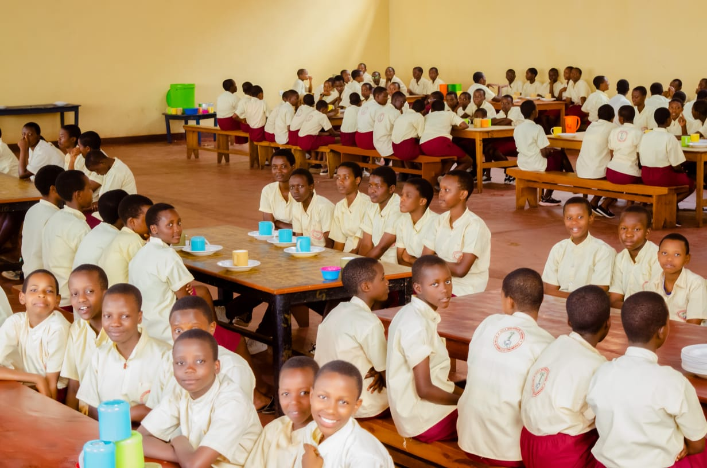

Œuvre éducative de la Congrégation
Ecole Monseigneur Bernard Bududira
Une institution de l'Institut Famille des Disciples du Christ, avec la Section Maternelle, l'ECOFO et le Lycee Technique Monseigneur Bernard Bududira.
Section Maternelle
Maternelle, ECOFO et Lycee Technique
Lycee Technique
Grandir avec foi et confiance
Un cadre proche des familles
Dialogue, suivi et confiance au quotidien.
A propos
Apprentissage structureDes objectifs lisibles pour chaque niveau.
Presence humaineUne equipe attentive aux besoins des eleves.
Orientation progressiveDes choix scolaires mieux accompagnes.
Une ecole qui accompagne chaque enfant.
Notre objectif est de creer un cadre scolaire clair, motivant et humain. Les eleves apprennent a reflechir, collaborer, communiquer et prendre confiance en leurs capacites.
Direction et administration
Une equipe presente pour accompagner l'ecole.
La direction, l'encadrement et l'administration travaillent ensemble pour accueillir les familles, organiser la vie scolaire et suivre chaque section avec attention.

01
Direction generale
La Soeur Directrice porte la mission educative et spirituelle de l'etablissement.

02
Encadrement des eleves
L'equipe d'encadrement veille au climat scolaire, a la discipline et au suivi quotidien.

03
Administration scolaire
Secretariat, internat et prefecture des etudes assurent l'organisation des dossiers et des parcours.
Nos atouts
Une organisation pensee pour la progression.
Nous combinons accompagnement, exigence, outils modernes et cadre stable pour aider chaque eleve a progresser.
4
piliers pour apprendre avec confiance
Suivi individuel
Chaque eleve est accompagne avec attention selon son rythme et ses difficultes.
Exigence scolaire
Des objectifs clairs, des evaluations regulieres et une vraie culture de l'effort.
Outils modernes
Une pedagogie ouverte aux sciences, au numerique et aux projets pratiques.
Cadre rassurant
Discipline, respect et securite pour apprendre dans un environnement stable.
Sections
Les trois sections de l'Ecole Monseigneur Bernard Bududira.

Section Maternelle
Un depart doux, structure et rassurant.
La maternelle accueille les plus jeunes dans un cadre adapte a leur age, avec des activites d'eveil, de langage, de motricite et de socialisation.
Eveil et expression
Langage et confiance
Jeux educatifs
Projet educatif
Grandir dans la foi, la discipline et le savoir-faire.
A l'Ecole Monseigneur Bernard Bududira, chaque enfant est accueilli selon son age, son rythme et sa section, puis accompagne vers l'autonomie, le service et la competence.
3
sections accompagnees
1
meme mission educative
100%
presence aupres des familles
Education chretienne et humaine
Bases solides de la maternelle a l'ECOFO
Competences pratiques au Lycee Technique
L'ecole commence par comprendre l'eleve, sa famille, son niveau et ses besoins afin de l'integrer dans un cadre rassurant.
- Ecoute des parents
- Observation du niveau
La Maternelle eveille, l'ECOFO construit les bases, et le Lycee Technique developpe des competences utiles pour la vie et le travail.
- Maternelle, ECOFO, Lycee Technique
- Objectifs adaptes a l'age
Les apprentissages vont avec la discipline, la foi, le respect, le dialogue et l'attention portee aux difficultes de chaque eleve.
- Suivi scolaire et humain
- Communication avec les familles
L'ecole aide les jeunes a devenir responsables, capables de servir, de poursuivre leur formation et de mettre leurs talents au travail.
- Autonomie et responsabilite
- Orientation progressive
Parcours academique
Un parcours structure de la maternelle au lycee technique.
Des disciplines complementaires pour former des eleves complets, capables de comprendre le monde et d'y trouver leur place.
Matiere phare
Sciences et mathematiques
Raisonnement, experimentation, resolution de problemes et preparation aux examens scientifiques.
- Algebre et geometrie
- Physique et chimie
- Biologie appliquee
Langues
Expression orale, lecture, redaction et ouverture aux cultures.
FrancaisAnglaisExpression
Sciences humaines
Histoire, geographie, citoyennete et comprehension du monde.
HistoireGeoCivisme
Numerique
Informatique, recherche, projets et usage responsable des outils digitaux.
InformatiqueProjets
Vie scolaire
Une ecole vivante au-dela des cours.
Les activites permettent aux eleves de decouvrir leurs talents, de gagner en confiance et d'apprendre a travailler avec les autres.
Arts et expression
Sport et bien-etre
Clubs scientifiques
Leadership et service


Horaires, internat et encadrement
Une organisation claire pour la vie scolaire.
Les journees sont structurees autour de l'etude, des cours, de la formation spirituelle, de l'internat et d'un encadrement pedagogique solide.
Rythme hebdomadaire
Du lundi au samedi
6 h 00 - 7 h 15
Etude obligatoire
7 h 45 - 13 h 15
Cours
Le dimanche
17 h 00 - 20 h 00Culte et etude obligatoires
Internat
Internat reserve aux filles.
Enseignants
Des enseignants qualifies et experimentes assurent les apprentissages.
Ecole maternelle
Une section maternelle est disponible pour les plus jeunes.
Refectoire
Un temps de repas organise et convivial.
Le refectoire participe a la vie scolaire: les eleves apprennent l'ordre, le respect, le partage et les bonnes habitudes dans un cadre encadre.
01 Encadrement
02 Respect
03 Partage

Accompagnement
Un suivi qui regarde l'eleve dans sa globalite.
Bien-etre
Ecoute, prevention, discipline positive et climat scolaire rassurant.
Suivi des resultats
Evaluation continue, bilans, conseils et communication avec les familles.
Orientation
Aide au choix des filieres, preparation des projets d'etudes et de carriere.
Galerie
La vie de l'ecole en images.
Contact
Contactez l'administration de l'ecole.
Contactez l'administration pour obtenir les informations sur les horaires, l'internat et la vie scolaire.